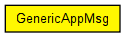

Message class for generic request-reply style applications. The client sends a GenericAppMsg which contains the number of bytes the client wants the server to send back as reply.
This way intelligence (behaviour specific to the modelled application, e.g. HTTP, SMB, database protocol) needs only to be present in the client, and the server model can be kept simple and dumb.
See also: TCPGenericSrvApp, TCPGenericCliAppBase (C++ only)
The following diagram shows usage relationships between types. Unresolved types are missing from the diagram. Click here to see the full picture.
The following diagram shows inheritance relationships for this type. Unresolved types are missing from the diagram. Click here to see the full picture.
| Name | Type | Description |
|---|---|---|
| serverClose | bool |
with TCP: if true, server should close the connection after sending the reply |
| expectedReplyLength | int |
in bytes |
| replyDelay | double |
reply after this many seconds |
// // Message class for generic request-reply style applications. // The client sends a GenericAppMsg which contains the number of // bytes the client wants the server to send back as reply. // // This way intelligence (behaviour specific to the modelled application, // e.g. HTTP, SMB, database protocol) needs only to be present in // the client, and the server model can be kept simple and dumb. // // @see TCPGenericSrvApp, TCPGenericCliAppBase (C++ only) // packet GenericAppMsg { int expectedReplyLength; // in bytes double replyDelay; // reply after this many seconds bool serverClose; // with TCP: if true, server should close the // connection after sending the reply }